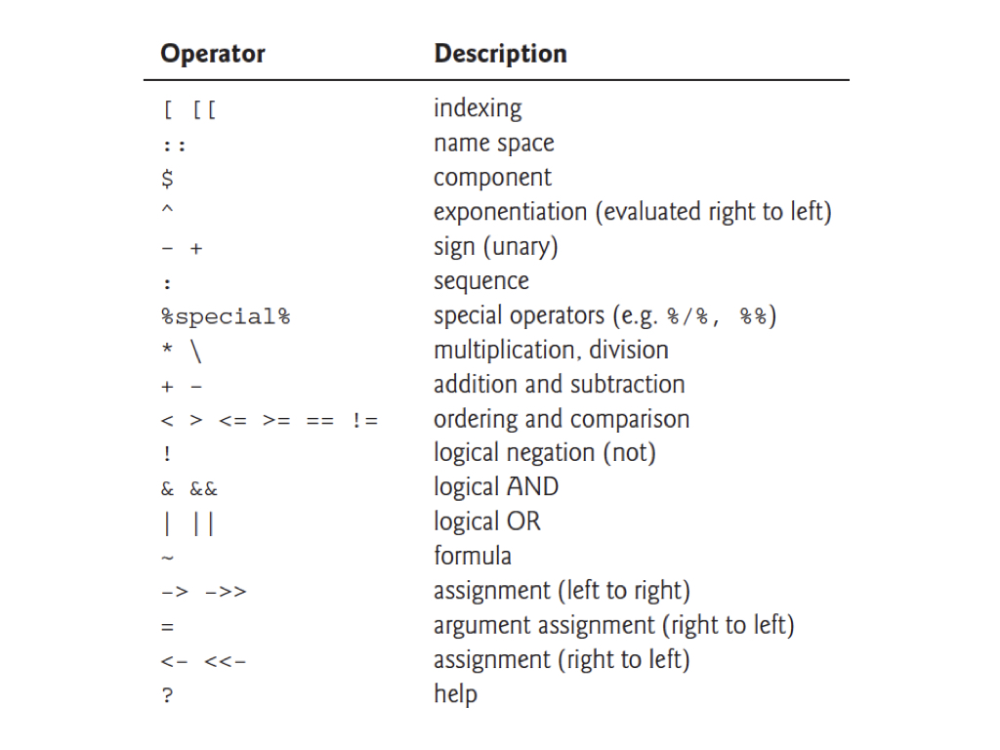

4*4[1] 16R is a computer programming language and environment especially useful for graphic visualization and statistical analysis of data. It is an offshoot of a language developed in 1976 at Bell Laboratories called S. R is an interpreted language, meaning that every time code is run it must be translated to machine language by the R interpreter, as opposed to being compiled prior to running. R is the premier computational platform for statistical analysis thanks to its GNU open-source status and countless packages contributed by diverse members of the scientific community.
R?R analyses in dynamic, polished files using R markdownRStudioR terms and definitions
Operators are symbols in programming that have a specific meaning

R via the RStudio EnvironmentTo begin working with R, open RStudio. You should first see something that looks like this: 
To open a new script editor (where you will keep track of your code and notes), go to File > New File > R Script. Note that there are other options for file types, which we will be using in the future. For now, though, we want a plain script, which when saved will have the extention .R.
It is easy to run code directly from the script editor. For single lines of code, simply make sure your cursor is on that line, and hit Ctrl-Enter. For multiple lines, highlight the block of code you want to run and hit Ctrl-Enter.
Now your display should look somehting like below (but without the red pane labels, of course): 
Note that you can also type commands directly from the command line using the R Console (lower left pane), and the R interpreter will run them when you press Enter.
Any objects you define, and a summary of their values, will appear in the upper right pane, and the lower right pane differs in appearance depending on instructions you provide to R Studio. For instance, if you produce a plot, it will appear there by default. Another extremely important feature of R functions (we’ll get to them in a bit) is the help file. Recall from Chapter 5 our discussion of man pages for UNIX programs. Help files the equivalent for R functions. They contain almost everything you need to know about a given function, and most of them even include and example at the bottom. These help files will appear in the lower right RStudio pane when you call them, for example when you run help(function_name) at the R Console.
For the code examples below, it might be useful for you to start your own RStudio session, open a new .R file and type/run code while reading.
# symbol (aka hash) is just for humans# symbols and the number of output items is in []R follows the normal priority of mathematical evaluation4*4[1] 16(4+3*2^2)[1] 16R MarkdownThis format provides a much better way to embed code and output, in an easily readable, reproducible manner. We will dive into R Markdown next week, so for now just be aware that it exists.
http://kbroman.org/knitr_knutshell/pages/Rmarkdown.html
You can insert R chunks into Rmarkdown documents
To “store” information for later use, like the arithmetic operation above, we can assign variables in R.
Variables are assigned values using the <- operator.
Variable names must begin with a letter, and should not contain spaces or R operators (see above) but other than that, just about anything goes. It is good practice to avoid periods in variable names, as they have other functionality in related programming languages, like Python.
Do keep in mind that R is case sensitive.
x <- 2
x * 3[1] 6y <- x * 3
y - 2[1] 4These do not work
3y <- 3
3*y <- 3Arithmetic operations can be used with functions as well as numbers.
Try the following, and then your own.
x+2
x^2
log(x) + log(x+1)Note that the last of these - log() - is a built in function of R, and therefore the argument for the function (in this case “x” or “x+1”) needs to be put in parentheses.
These parentheses will be important, and we’ll come back to them later when we add other arguments after the object in the parentheses.
The outcome of calculations can be assigned to new variables as well, and the results can be checked using the print() function.
y <- 67
print(y)[1] 67x <- 124
z <- (x*y)^2
print(z)[1] 69022864Assignments and operations can be performed on characters as well.
Note that characters need to be set off by quotation marks to differentiate them from numeric objects.
The c(function) stands for ‘concatenate’.
Note that we are using the same variable names as we did previously, which means that we’re overwriting our previous assignment.
A good general rule is to use new names for each variable, and make them short but still descriptive
x <- "I Love"
print (x)[1] "I Love"y <- "Biostatistics"
print (y)[1] "Biostatistics"z <- c(x,y)
print (z)[1] "I Love" "Biostatistics"The variable z is now a vector of character objects.
Sometimes we would like to treat character objects as if they were units for subsequent calculations.
These are called factors, and we can redefine our character object as one of class factor.
This might seem a bit strange, but it’s important for statistical analyses where we might want to calculate the mean or variance for two different treatments. In that case the two different treatments would be coded as two different “levels” of a factor we designate in our metadata. This will become clear when we get into hypothesis testing in R.
z_factor <- as.factor(z)
print(z_factor)
class(z_factor)Note that factor levels are reported alphabetically. I used the class() function to ask R what type of object “z_factor” is. class() is one of the most important tools at your disposal. Often times you can debug your code simply by changing the class of an object. Because functions are written to work with specific classes, changing the class of a given object is crucial in many cases.
R (and many programming languages) have special strings that mean ‘no value’, or ‘null’. In R, the most common is NA, although there are others as well (NULL and NaN)
Typically, NA is used to indicate a lack of data for a given observation, or a missing value where there normally should be one.
Any instance of a blank entry in your data file will be read into R as an NA.
NA is a technically a logical data type, and is not equivalent to an empty string or the numeric 0. It is also a reserved word and can’t be used as a variable name.
class(NA)[1] "logical"Many functions in R (e.g. mean()) will not work by default if passed any NA values as an argument. So if we want to determine the mean of a vector of numeric values, we need to ensure there are either no NA values in the vector, or specify an additional ‘argument’ to the function telling it to ignore NA. Additionally NA, like other ‘null’ values, are operated on by a number of unique functions in R.
num <- c(0,1,2,NA,4)
mean(num)[1] NAmean(num, na.rm = TRUE)[1] 1.75is.na(num)[1] FALSE FALSE FALSE TRUE FALSEIn general R thinks in terms of vectors (a list of characters factors or numerical values) and it will benefit any R user to try to write programs with that in mind.
The simplest vectors in R are ‘atomic’ vectors, meaning that they consist of only one data type.
R operations, and therefore functions, are vectorized.
This means an operation or function will be performed for each element in a vector.
Vectors can be assigned directly using the ‘c()’ function and then entering the exact values.
x <- c(2,3,4,2,1,2,4,5,10,8,9)
print(x) [1] 2 3 4 2 1 2 4 5 10 8 9x_plus <- x+1
print(x_plus) [1] 3 4 5 3 2 3 5 6 11 9 10Creating vectors of new data by entering it by hand can be a drag.
However, it is also very easy to use functions such as seq() and sample().
Try the examples below. Can you figure out what the three arguments in the parentheses mean?
Within reason, try varying the arguments to see what happens
seq_1 <- seq(0.0, 10.0, by = 0.1)
print(seq_1) [1] 0.0 0.1 0.2 0.3 0.4 0.5 0.6 0.7 0.8 0.9 1.0 1.1 1.2 1.3 1.4
[16] 1.5 1.6 1.7 1.8 1.9 2.0 2.1 2.2 2.3 2.4 2.5 2.6 2.7 2.8 2.9
[31] 3.0 3.1 3.2 3.3 3.4 3.5 3.6 3.7 3.8 3.9 4.0 4.1 4.2 4.3 4.4
[46] 4.5 4.6 4.7 4.8 4.9 5.0 5.1 5.2 5.3 5.4 5.5 5.6 5.7 5.8 5.9
[61] 6.0 6.1 6.2 6.3 6.4 6.5 6.6 6.7 6.8 6.9 7.0 7.1 7.2 7.3 7.4
[76] 7.5 7.6 7.7 7.8 7.9 8.0 8.1 8.2 8.3 8.4 8.5 8.6 8.7 8.8 8.9
[91] 9.0 9.1 9.2 9.3 9.4 9.5 9.6 9.7 9.8 9.9 10.0seq_2 <- seq(10.0, 0.0, by = -0.1)
print(seq_2) [1] 10.0 9.9 9.8 9.7 9.6 9.5 9.4 9.3 9.2 9.1 9.0 8.9 8.8 8.7 8.6
[16] 8.5 8.4 8.3 8.2 8.1 8.0 7.9 7.8 7.7 7.6 7.5 7.4 7.3 7.2 7.1
[31] 7.0 6.9 6.8 6.7 6.6 6.5 6.4 6.3 6.2 6.1 6.0 5.9 5.8 5.7 5.6
[46] 5.5 5.4 5.3 5.2 5.1 5.0 4.9 4.8 4.7 4.6 4.5 4.4 4.3 4.2 4.1
[61] 4.0 3.9 3.8 3.7 3.6 3.5 3.4 3.3 3.2 3.1 3.0 2.9 2.8 2.7 2.6
[76] 2.5 2.4 2.3 2.2 2.1 2.0 1.9 1.8 1.7 1.6 1.5 1.4 1.3 1.2 1.1
[91] 1.0 0.9 0.8 0.7 0.6 0.5 0.4 0.3 0.2 0.1 0.0seq_square <- (seq_2)*(seq_2)
print(seq_square) [1] 100.00 98.01 96.04 94.09 92.16 90.25 88.36 86.49 84.64 82.81
[11] 81.00 79.21 77.44 75.69 73.96 72.25 70.56 68.89 67.24 65.61
[21] 64.00 62.41 60.84 59.29 57.76 56.25 54.76 53.29 51.84 50.41
[31] 49.00 47.61 46.24 44.89 43.56 42.25 40.96 39.69 38.44 37.21
[41] 36.00 34.81 33.64 32.49 31.36 30.25 29.16 28.09 27.04 26.01
[51] 25.00 24.01 23.04 22.09 21.16 20.25 19.36 18.49 17.64 16.81
[61] 16.00 15.21 14.44 13.69 12.96 12.25 11.56 10.89 10.24 9.61
[71] 9.00 8.41 7.84 7.29 6.76 6.25 5.76 5.29 4.84 4.41
[81] 4.00 3.61 3.24 2.89 2.56 2.25 1.96 1.69 1.44 1.21
[91] 1.00 0.81 0.64 0.49 0.36 0.25 0.16 0.09 0.04 0.01
[101] 0.00seq_square_new <- (seq_2)^2
print(seq_square_new) [1] 100.00 98.01 96.04 94.09 92.16 90.25 88.36 86.49 84.64 82.81
[11] 81.00 79.21 77.44 75.69 73.96 72.25 70.56 68.89 67.24 65.61
[21] 64.00 62.41 60.84 59.29 57.76 56.25 54.76 53.29 51.84 50.41
[31] 49.00 47.61 46.24 44.89 43.56 42.25 40.96 39.69 38.44 37.21
[41] 36.00 34.81 33.64 32.49 31.36 30.25 29.16 28.09 27.04 26.01
[51] 25.00 24.01 23.04 22.09 21.16 20.25 19.36 18.49 17.64 16.81
[61] 16.00 15.21 14.44 13.69 12.96 12.25 11.56 10.89 10.24 9.61
[71] 9.00 8.41 7.84 7.29 6.76 6.25 5.76 5.29 4.84 4.41
[81] 4.00 3.61 3.24 2.89 2.56 2.25 1.96 1.69 1.44 1.21
[91] 1.00 0.81 0.64 0.49 0.36 0.25 0.16 0.09 0.04 0.01
[101] 0.00Here is a way to create your own data sets that are random samples.
Again, on your own, play around with the arguments in the parentheses to see what happens.
x <- rnorm (10000, 0, 10)
y <- sample (1:10000, 10000, replace = T)
xy <- cbind(x,y)
plot(x,y) 
You’ve probably figured out that “y” from the last example is a draw of numbers with equal probability (what we call a flat, or uniform distribution).
What if you want to draw from a defined probability distribution, like the normal distribution?
Again, play around with the arguments in the parentheses to see what happens.
x <-rnorm(100, 0, 100)
print (x) [1] -69.152544 96.145976 56.104805 -58.674296 -65.802408 143.361974
[7] 196.461792 39.712626 53.335655 110.085311 -10.930155 -22.449469
[13] 191.115620 41.084773 -77.531952 18.914509 -25.713070 -113.668051
[19] -19.125146 104.130430 7.942500 99.681345 14.731046 -28.472885
[25] 119.213117 145.053291 -19.392547 -146.421620 5.430961 -63.914529
[31] 21.815178 41.631799 155.791378 -8.433466 -107.611430 244.806042
[37] -13.875018 132.652141 28.746530 -21.163993 3.171919 137.423183
[43] -83.661419 -36.391923 -43.017289 -134.112450 23.113455 70.923486
[49] -218.833128 88.060395 23.631610 -61.146499 -89.732732 -25.999610
[55] -50.176918 -53.760480 81.046838 -150.460702 70.544618 146.220913
[61] -87.257098 5.596045 206.623867 -55.348222 -89.462636 68.832957
[67] -251.692491 5.364223 -138.681812 83.987936 126.391156 21.335142
[73] 84.681852 -88.451959 -115.129575 12.903592 -128.683746 11.379143
[79] -57.038187 31.974334 -43.430315 155.461792 19.436525 88.920168
[85] -19.305196 11.366543 -40.936774 37.594176 94.811145 18.084675
[91] 67.008880 -57.332647 9.749443 -212.214776 20.286108 35.831822
[97] -150.734772 -3.847387 101.847398 -129.478030hist(x, xlim = c(-50,50))
hist(x, xlim = c(-500,500))
Can you figure out what the three rnorm() arguments represent?
We will get into the details regarding summary statistics later, but for now, check out several of the R functions that calculate them.
mean(x)
median(x)
var(x)
log(x)
ln(x)
sqrt(x)
sum(x)
length(x)
sample(x, replace = T)Notice that the last function (sample) has an argument (replace=T)
Arguments simply modify or direct the function in some way
There are many arguments for each function, some of which are defaults
Getting help on any function is very easy - just type a question mark and the name of the function.
There are functions for just about anything within R and it is easy enough to write your own functions if none already exist to do what you want to do.
In general, function calls have a simple structure: a function name, a set of parentheses and an optional set of arguments you assign parameters to and send to the function.
Help pages exist for all functions that, at a minimum, explain what parameters exist for the function.
Help can be accessed a few ways - try them :
- help(mean)
- ?mean
- example(mean)
- help.search("mean")
- apropos("mean")
- args(mean)Logan, M. 2010. Biostatistical Design and Analysis Using R. - A great intro to R for statistical analysis
http://library.open.oregonstate.edu/computationalbiology/ - O’Neil, S.T. 2017. A Primer for Computational Biology